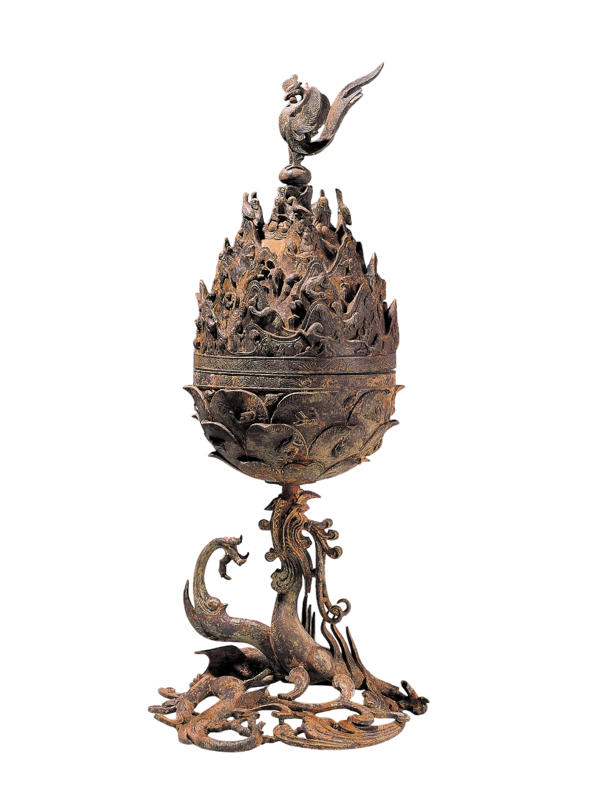

얼굴무늬 수막새

백제금동대향로
높이 64㎝, 무게 11.8㎏의 대형 향로로,
크게 몸체와 뚜껑으로 구분되며 위에 부착한 봉황과 받침대를 포함하면 4부분으로 구성된다.
뚜껑에는 23개의 산들이 4-5겹으로 첩첩산중을 이루는 풍경을 보여주고 있다.
봉황 앞 가슴과 악사상 앞뒤에는 5개의 구멍이 뚫려 있어
몸체는 활짝 피어난 연꽃을 연상시키며 향 연기를 자연스럽게 피어오를 수 있게 하였다.
연잎의 표면에는 불사조와 물고기, 사슴, 학 등 26마리의 동물이 배치되어 있다.
받침대는 몸체의 연꽃 밑부분을 입으로 문 채 떠받고 있는 한 마리의 용으로 되어 있다.

금동미륵보살반가사유상